Je oefent op een virtuele machine met twee lege schijven, zodat je kan partitioneren zonder ergens data kwijt te spelen. Op die machine komt geen besturingssysteem: ze start rechtstreeks op van het GParted Live-bestand dat je gedownload hebt.
Open VirtualBox en klik op Nieuw.
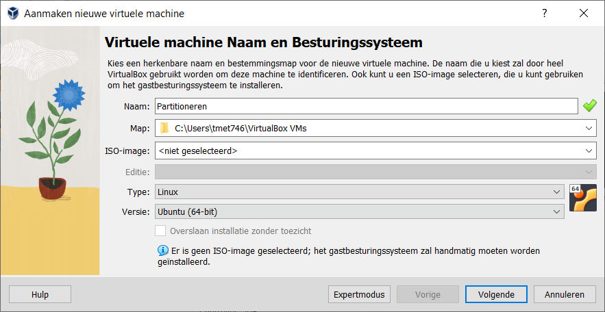
Geef de machine een naam waaraan je ze herkent, bijvoorbeeld Partitioneren, en stel in:
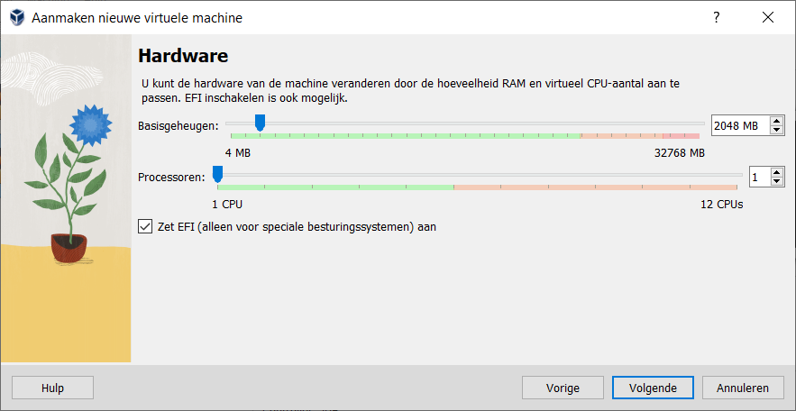
Geef de virtuele harde schijf een grootte van 10 GB. Het vinkje voor pre-alloceren mag aan of uit staan.
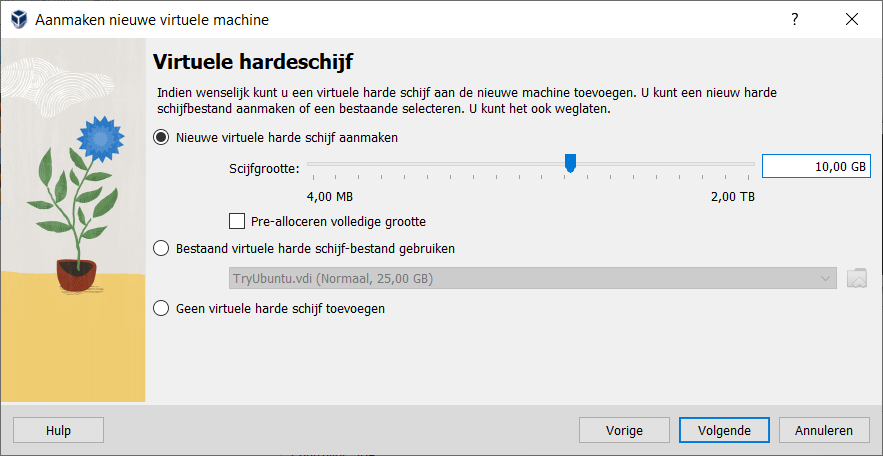
De partitiegroottes verderop zijn op die 10 GB afgestemd. Neem je een andere schijf, dan komen de afbeeldingen niet meer overeen met wat je ziet.
Klik op Voltooien. Start de machine nog niet op.
De tweede schijf krijgt verderop een GPT-partitietabel, terwijl de eerste er een van MBR houdt. Zo kan je beide formaten naast elkaar bekijken.
Selecteer de machine en klik op Instellingen.
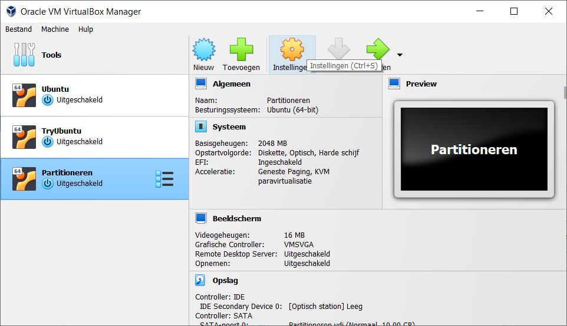
Ga naar Storage.
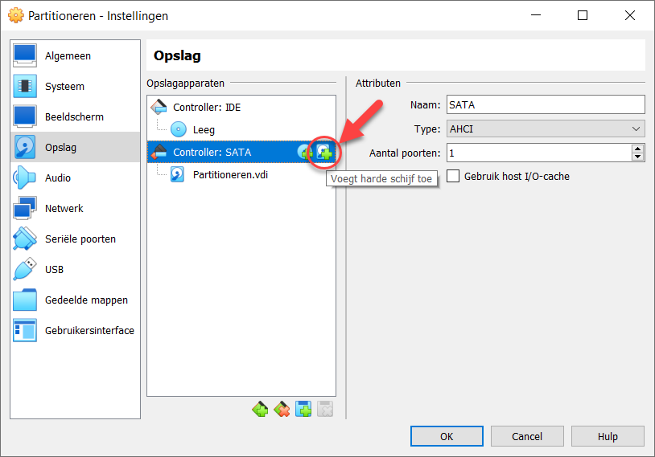
Klik op het pictogram om een harde schijf toe te voegen.
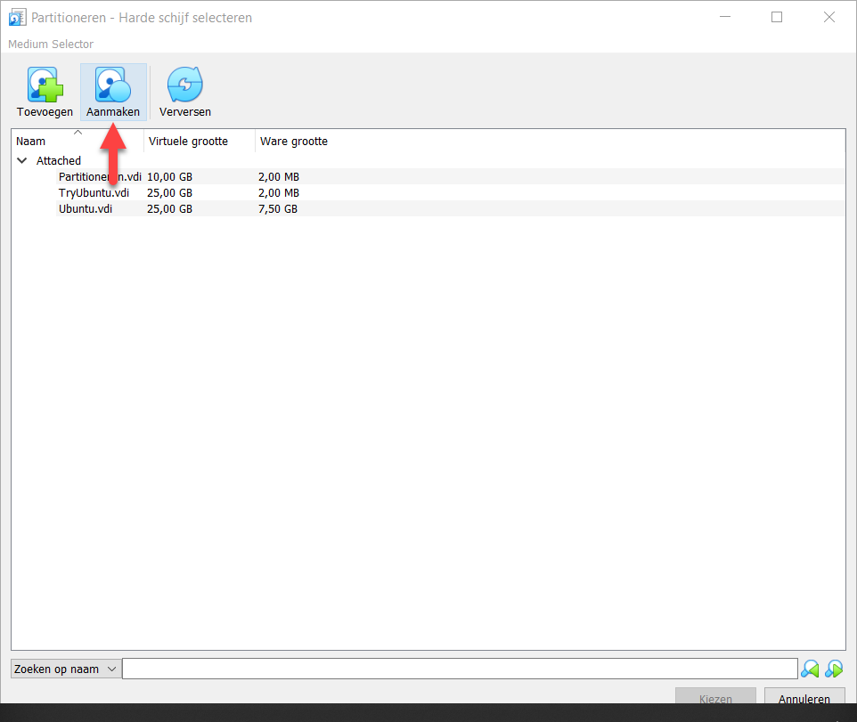
Kies Create.
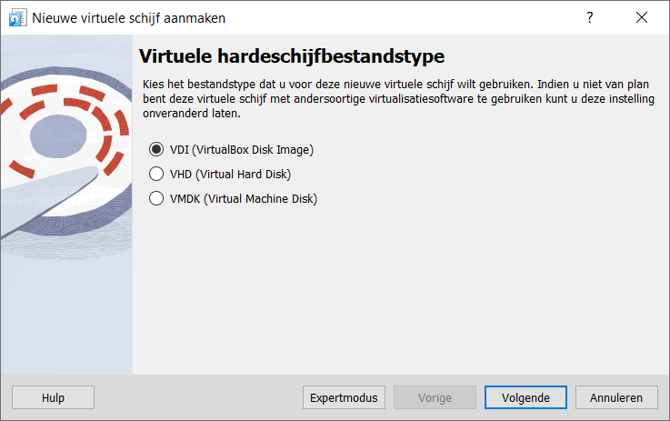
Laat het schijftype op VDI staan.
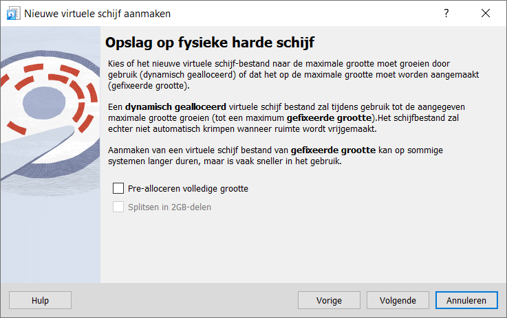
Stel de grootte in op 10 GB.
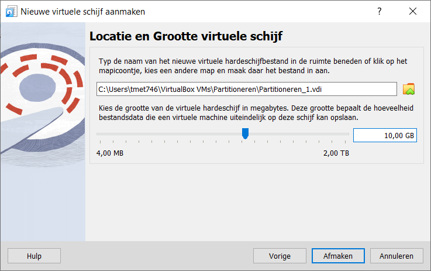
Bevestig, en klik daarna op Choose.
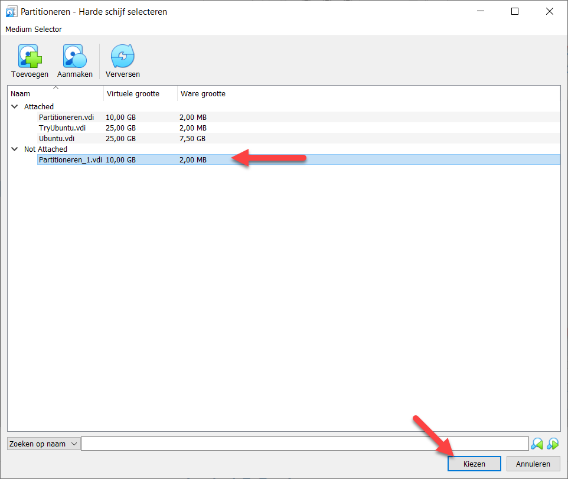
Kijk na of er nu twee schijven van 10 GB onder de controller hangen.
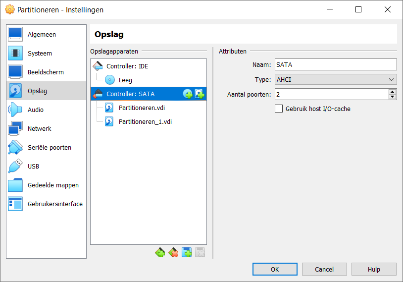
Start de machine. Ze vindt niets om van op te starten en vraagt een schijfbestand: klap het
lijstje open, kies Andere en zoek het GParted-bestand met de extensie
.iso op. Klik op Mount en probeer opnieuw.
GParted Live toont een menu. Neem de bovenste keuze, waarbij de instellingen ongewijzigd blijven.
Bij de keuze van het toetsenbord neem je Don't touch keymap.
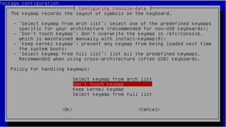
Kies als taal Dutch 06 en als mode 0.
GParted start op en toont de eerste schijf.
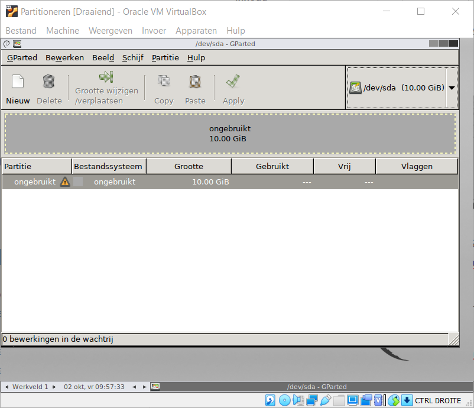
GParted toont de partitietabel van één schijf tegelijk. Rechtsboven staat een keuzelijst waarmee je van
schijf wisselt, en daar staan nu /dev/sda en /dev/sdb in.
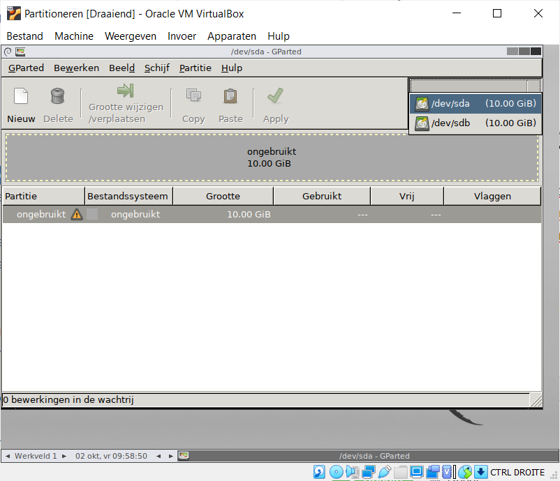
Beide schijven staan volledig als ongebruikt te boek: ze zijn nieuw en er staat nog geen
partitietabel op. Waar de namen /dev/sda en /dev/sdb vandaan komen, staat op
Partitietabellen.
Kijk voor elke bewerking na welke schijf er in de keuzelijst rechtsboven staat. De oefeningen hierna
gebeuren op /dev/sda, behalve de laatste, die op /dev/sdb gebeurt.